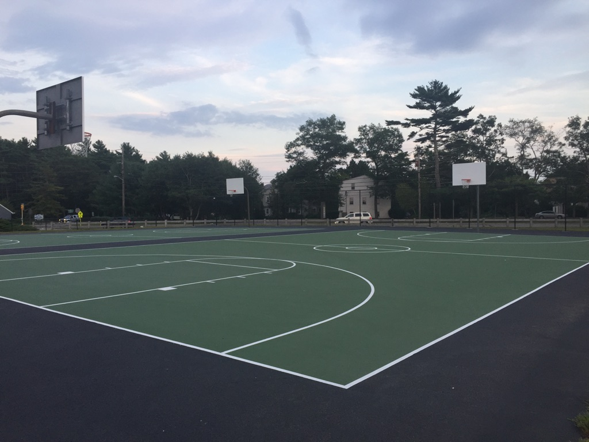
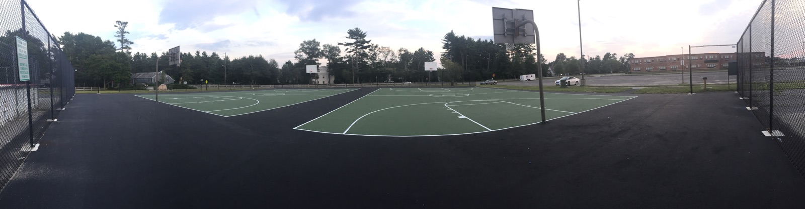
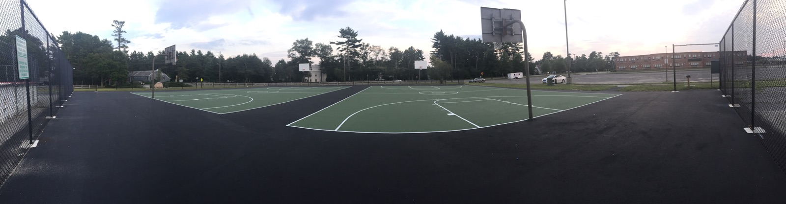
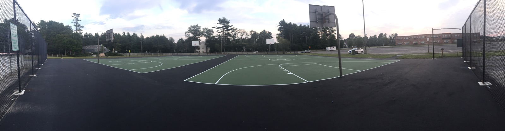

Jared Barrows Foundation
About Jared
Jared Robert Barrows and twin Jeffrey Paul Barrows were born on July 22, 1983. They grew up in Marshfield and attended Marshfield
schools, proudly graduating from Marshfield High School in 2002. From the beginning, Jared had an exceptional talent for making
others laugh. He was caring, loving and had an abundance of friends who he adored, and they adored him back.
After high school, Jared and Jeffrey both attended Nichols College in Dudley, MA. In his sophomore year, Jared decided to major in Art
and Graphic Design. He transferred to Plymouth State University in Plymouth, NH to pursue his dream. Jared was due to graduate in
May of 2007. Sadly, 3 weeks before graduation, Jared was assaulted on his way back to his dormitory by another student. He
sustained a brain injury and remained in a coma for 5 days, before passing away on April 20th, 2007.
This Foundation was created in Jared's memory. Because of his kindness, generosity and love for Marshfield, I have no doubt in my
mind that he would have wanted to give back to the Marshfield community where he grew up.
Thank You
Anna DaVeiga
(Jared's Mom)
Projects
We have met with town officials, the director of recreation and
local construction companies. We have decided that the
foundation's first project is to renovate the basketball courts
located adjacent to the Marshfield High School. These courts
are used daily by the local community and after many years of use
there is significant wear and tear resulting in several severe cracks.
These cracks are sizable and have become a safety concern. This has forced
the children's summer program to be relocated.
Several local companies will be donating their equipment and material
to help make this project happen and with your help we hope to create a
wonderful, fun, and safe environment for the community to enjoy.
The Jared Barrows Foundation consistently will be giving scholarships out
annually to graduating seniors off to college, but has a new initiative
this year which is the basketball court.
Before


After

 


Donate
Since 2008 we have raised over $10,000. The Jared Barrows Foundation is so thankful for all
the support thus far, but we still need your help to provide the community with a new, safe
public basketball court. Your donation will assist us in renovating the basketball courts
as well as assist a college bound Marshfield senior.
With your generous donation, you can make
a difference in the Marshfield community. So act now and contribute what you can!